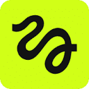
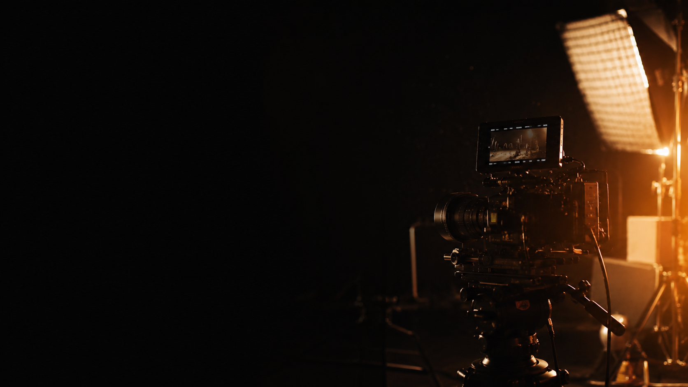

СОБРАНО НА СТЕКЕ:
 Claude Code
Claude Code
 CapCut
CapCut
Claude Code

Higgsfield ffmpeg OpenCVCapCut

От брифа до экспорта. Готовые решения, точные настройки и места, где горят кредиты — и как их не жечь. Простым языком.
Claude Code

Higgsfield ffmpeg OpenCVCapCut
Каждый шаг построен одинаково: что делать → как → чего НЕ делать (чтобы не жечь кредиты). Конкретные модели, настройки, цены, промты.
Дорогое — это оживление картинки в видео. Картинка стоит копейки, видео — много. Поэтому оживляем ТОЛЬКО утверждённый кадр. Оживил черновой — переделка съедает кредиты дважды.
Полный маршрут от идеи до готового ролика. Жми на этап — раскроется.
Фото человека для аватара:
Вводные проекта: формат (16:9 / 9:16), хронометраж, стиль (палитра/свет) + 2–3 референса, сквозные правила — что нельзя менять между сценами (цвет акцента, элемент одежды, цвет фона).
Именуй файлы по ракурсу — face_front.jpg, face_left90.jpg — штаб не путается в папке.
Pro: сними 2–3 фото только для сложного ракурса (строгий профиль 90°) на нейтральном фоне — именно он чаще всего теряет сходство при генерации.
Не стартуй без полного набора ракурсов — модель додумывает лицо там, где фото не хватает. Особенно критичен профиль.
Что входит в ТЗ заказчику:
Сцена 3 — герой у окна, ¾ слева, лёгкий поворот головы, 4сУтверди письменно (скриншот чата / подпись) → правишь сцену на скетче бесплатно, не на сгенерированном видео.
Pro: посчитай смету ДО старта — 10 сцен × 4с на kling-turbo ≈ 60 кр, на seedance ≈ 200–360 кр. Заказчик одобряет бюджет на берегу.
Не начинай рендер без подписанного ТЗ. Правка на скетче — минута, на готовом видео — повторная генерация и кредиты дважды.
Полный маршрут: генерация в облаке → обработка локально → сборка:
Правило стека: облако — только для генерации (платно). Всё остальное — локально, бесплатно. Не гони постпродакшн через Higgsfield.
Что делает Claude Code в этом проекте:
Pro: вставь этот гайд в системный промт сессии — штаб сразу знает правила проекта, методику и стек. Работает как брифованный ассистент, не надо объяснять каждый раз.
Слоты промта стартового кадра:
Воркфлоу: генери 3–4 варианта → выбери лучший → зафиксируй seed и настройки → получи утверждение → только потом оживляй.
Якорь сходства = реальное фото или обученный аватар, а не текст. На словах модель «идеализирует»: нос тоньше, скулы острее.
Pro: держи один эталонный кадр (утверждённый лук) и сверяй каждый новый кадр с ним перед отправкой заказчику — так не пропустишь дрейф стиля.
Профиль 90° на одном тексте не делай — самый «непохожий» ракурс. Дай реальное боковое фото как жёсткий референс + запрет «не сужать, не заострять».
Правила генерации клипа:
static shot, no zoom, no pan — иначе модель добавит наездМодель под бюджет: общий план / мелкое лицо → kling3_0_turbo (≈6 кр/4с); крупный план / важно сходство → seedance_2_0 + аватар (≈18–36 кр/4с).
Примерная смета 10 сцен × 4с: kling-turbo ≈ 60 кр · seedance ≈ 180–360 кр.
Частые ошибки → решения:
camera stays static, no movement в промтеСтабилизация — зачем: после оживления модель часто добавляет дрожь и наезд. Дрожь читается как «дёшево / ИИ».
Грейд (цвет): Ч/Б-база + возврат цвета только в нужной зоне по маске. Лёгкое зерно (noise filter) + Ч/Б-база с возвратом цвета через маску = «киношность» без платных плагинов.
4K: scale + unsharp через ffmpeg — бесплатно. Для Instagram достаточно 1080p.
Pro: запускай стабилизацию и грейд одним скриптом на всю папку клипов — Claude Code автоматизирует пакет через ffmpeg, не надо делать вручную каждый файл.
Платный AI-апскейл не нужен для Instagram — из 1080p норм. Не трать кредиты там, где ffmpeg справляется бесплатно.
Структура ролика:
Аудио-first: сначала кладёшь дорожку (музыка / SFX) как ритм-скелет, потом режешь клипы под бит. Бесплатные библиотеки звука: Pixabay, Freesound, YouTube Audio Library.
Монтаж: открытие из чёрного (плавное появление ~0.7с), между сценами — жёсткие резы. Оптический поток ВЫКЛ — добавляет артефакты на AI-видео.
Параметры экспорта: 1080p · 24 fps · H.264 · ~20 Мбит/с — и один раз, не пересохранять.
Pro: 24fps воспринимается как «кино». 30fps — как «обычное видео». Для брендового ролика 24fps выигрывает всегда.
Не ставь 30 fps и не пересохраняй — появится джаддер (дёрганость). Экспортируй один раз финальный файл.
Справочник по Higgsfield (облачный сервис генерации картинок/видео) — модели внутри него.
Генерит ровно лицо клиента. Обучить: Higgsfield → Characters → Train Soul → 5–20 фото → ~10 мин. Спасает крупные планы.
Точные правки, мульти-реф (перенос лука по нескольким фото), подмена лица, фон.
~2 кр / кадрКартинка → видео. Kling-turbo ≈ 6 кр/4с (дёшево), Seedance ≈ 18–36 кр/4с (под сходство).
Повышает чёткость; финал до 4K доводишь в ffmpeg.
~0.17 крБесплатная программа обработки видео: грейд, стабилизация, скорость, склейка, маски.
0 кредитовБиблиотеки покадровой работы с картинкой: композит лица, ретушь, проверка (QC).
0 кредитовПодписка Higgsfield: PLUS — $59/мес. Пополнение кредитов — от 500 кр ≈ $26 (90 дней).
90% качества — правильный контекст на входе (референсы + точные слоты), а не «красивые слова».
[тип кадра] → [субъект + ЯКОРЬ сходства] → [ракурс] → [композиция] → [одежда/континьюити] → [сцена/фон] → [свет/стиль/ЦВЕТ-правило] → [негатив/гард] → [референсы-картинки]
[Тип: cinematic editorial photo, full-body / medium-wide]
ONE single woman only — no duplicate, no second person. ← гард
The SAME woman as the reference — keep her exact face.
[Ракурс: strict left-side profile, head not turned]
[Композиция: she stands FAR LEFT, space ahead to walk into]
[Одежда: точный лук + детали из других сцен]
[Сцена/фон: где и как освещено]
[Свет/стиль: cinematic, premium]
[ЦВЕТ-правило: black & white EXCEPT lips in red — single accent]
[Негатив: no duplicate, no extra hands]
+ референсы: 1) фото-якорь сходства 2) реф сцены/лукаKeep the FIRST image unchanged — same face, pose, frame, color.
ONE woman only, no duplicate. ← гард
Change ONLY these things:
(1) [правка 1 — конкретно]
(2) [правка 2 — конкретно]
Do NOT alter her face / head.
[ЦВЕТ-правило повторить]
+ референсы: базовый кадр + (опц.) реф детали
Правила: одна правка за прогон · чтобы «убрать предмет» — бери базу, где его уже нет · всегда дубль-гард.
Static locked camera — no zoom, no pan, no shake. ← запрет движения
[Действие + направление: walks right→left, smooth pace]
Keep her EXACT face — do NOT re-render, distort or age it.
[Ракурс-лок: strict profile, head does NOT turn to camera]
[Микро-мимика: very subtle — slight chin-up + cold smirk]
[Континьюити: ponytail / strap / gloves / red lips stay]
[Стиль/цвет: black & white cinematic]
+ start_image = утверждённый кадр
Правила: мимика «very subtle» · всегда «do NOT re-render the face» · камеру фиксируй словами.
Как шла работа
— держит контекст и правила проекта в файлах, пишет промты;
— управляет Higgsfield через MCP — генерации из одного места, без ручных кликов;
— грейд / стабилизация / 4K скриптами ffmpeg / OpenCV — бесплатно;
— берёт дешёвую модель под задачу и ловит брак на проверке до повторной генерации.
Если Claude Code ещё нет: скачай десктоп-приложение Claude Code (Windows/Mac) на официальном сайте Anthropic (раздел Claude Code), либо поставь CLI в терминал.
Включить коннектор Higgsfield (прямо в приложении) — вставь команду:
claude mcp add --transport http --scope user higgsfield https://mcp.higgsfield.ai/mcp
→ при первом вызове откроется браузер — войди в свой Higgsfield (OAuth). Проверь: /mcp.
Локальные инструменты (терминал, не MCP):
winget install ffmpegpip install opencv-python numpy Как выполнить команду: команды claude…/winget…/pip… вставляй в терминал (Windows: Пуск → набери «PowerShell» → Enter → вставь строку → Enter). Команды со слешем (/mcp) — внутри сессии Claude Code.
Про скиллы — честно: под видео отдельные скиллы не нужны, всё держится на Higgsfield MCP + локальном ffmpeg/OpenCV.
Нет — тяжёлое считают облачные модели; локально только бесплатный ffmpeg.
Зависит от числа сцен; принцип «кадр дёшево → оживление на утверждённом» режет расход в разы.
Для общих планов — да; для крупных лиц аватар спасает сходство.
С брифа (этап 1) и принципа экономии (блок «Главный принцип»).
Спасибо, что подписался Гайд открыт полностью. Дальше будет ещё много такого же по делу — разборы реальных кейсов, связки и приёмы, что экономят время и деньги. Возвращайся за новым.
Вопросы? Пиши в комментариях под постом в канале
@ClaudeCodich